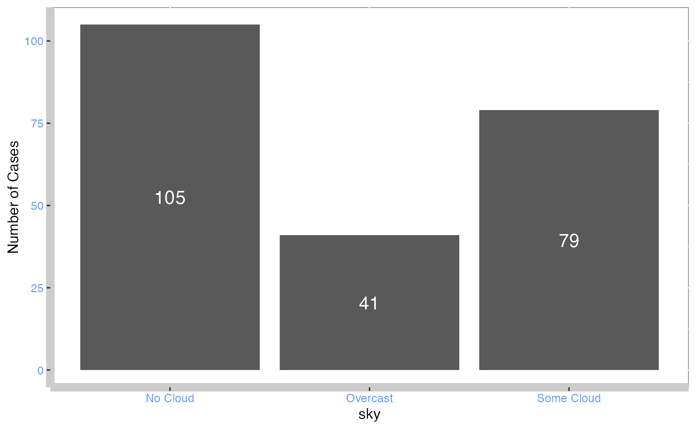
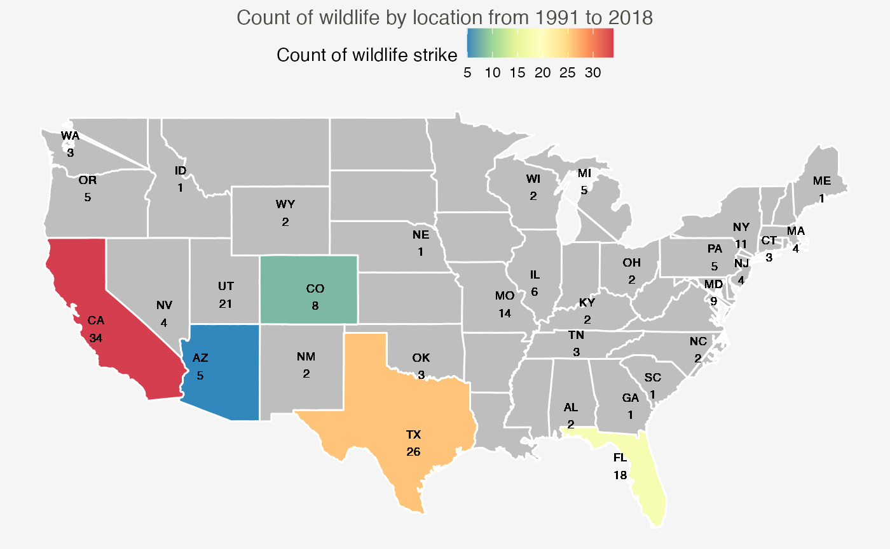
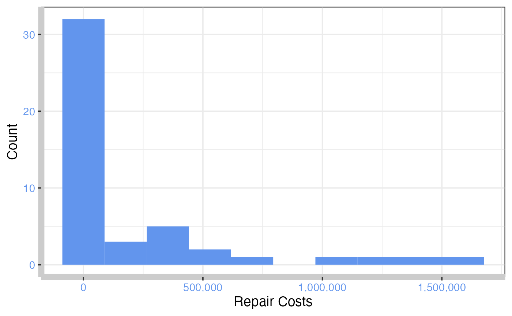

wildlifestrikes_aircrafts_USA.RmdThe number of wildlife strikes reported per year to the Federal Aviation Administration (FAA) increased steadily from about 1,800 in 1990 to 16,000 in 2018. Factors contributing to the increase include expansion of wildlife populations, increases in number of aircraft movements, a trend toward faster and quieter aircraft, and outreach to the aviation community. strikes, there has been greater emphasis on wildlife strike hazard research and airfield wildlife management. As a result, aircraft collisions with birds and other wildlife (wildlife strikes) have become a growing concern for aviation safety. Globally, wildlife strikes killed more than 293 people and destroyed over 271 aircraft from 1988-2020.
This vignette shows you an analysis of wildlife strikes to aircrafts
in the United States from 1991 to 2018, using the
wildlifestrikes package.
Dataset is obtained from tidytuesday. The dataset contains obtained using this link reported on wildlife impacts from the big 4 airlines in the United States, namely American Airlines, Delta, Southwest, and United as they account for around 70% of passengers in the USA.
The clean raw datasets can be retrieved with theses functions embedded in the package:
wildlife_strikes : Contains wildlife strikes cases
on a given date across the United States from 1991 to 2018.
USmap: Contains the geographical coordinates for
each state, primarily used for relational joins.
The dataset is combined with the U.S map data to provide an interactive map and other data visualisations to allow users to explore wildlife strike cases across the U.S.
The goals of the package are to:
You are required to load/download the R package by launching the
library() function.
# devtools::install_github("etc5523-2022/rpkg-Minminsoh")
library(wildlifestrikes) As mentioned previously, you could use the functions individually which are demonstrated in the following sections.
Alternatively, some of these functions have been embedded in the Shiny application as well, which provides an easy to use and clear platform to digest and understand the data. You could launch the shiny app with a single line of code:
#run_app()count_frequency() is the function that
calculates the frequency of occurrence for a particular variable in the
wildlife_strikes dataset in a dataframe
format. It is helpful in identifying which condition in the variable is
associated with higher occurence of wildlife strikes to aircrafts.
A common way to get a better understanding is to visualise it. This
package also provides an alternative function
count_frequency_plot which presents the
same results in a bar plot format.
More details about the usage of these functions can be found by using
the help(count_frequency) and
help(count_frequency_plot) function.
Both functions take 1 argument, being var. You only need
to provide the variable, which will then calculates the frequency of the
variable for you.
| Arguments | Description |
|---|---|
var |
the name of variable or the the name of the column in the dataset |
For example, sky variable is used, which then computes
the frequency of wildlife strikes to aircrafts in different sky
conditions. In this case, wildlife strikes tend to occur the most when
there is no cloud.
count_frequency(sky)
#> # A tibble: 3 × 2
#> # Groups: sky [3]
#> sky n
#> <chr> <int>
#> 1 No Cloud 105
#> 2 Overcast 41
#> 3 Some Cloud 79
count_frequency_plot(sky)
By running the function
cases_statemap(input_state), you would be
able to visualise the number of cases of wildlife strikes on aircrafts
in the states selected in a choropleth map. The Choropleth map is
implemented with a sequential colour scale to establish the geographical
location of the states with the highest total wildlifestrike cases from
1991 to 2018.
Alternatively, function
cases_state(input_state) presents the same
information in a dataframe format.
More details about the usage of these functions can be found by using
the help(cases_statemap) and help(cases_state)
function.
Both functions take 1 argument, being input_state.
| Arguments | Description |
|---|---|
input_state |
Name of the states in the dataset |
For example, if input_state consists of “arizona”,
“california”, “florida”, “colorado”, “texas”, this will return a
choropleth map showing the number of total wildlifestrike cases from
1991 to 2018. California has the highest cases of wildlife strikes, 34
cases from 1991 to 2018.
cases_statemap(c("arizona", "california", "florida", "colorado", "texas"))
cases_state(c("arizona", "california", "florida", "colorado", "texas"))
#> # A tibble: 5 × 3
#> # Groups: Abbreviation of State [5]
#> `Abbreviation of State` `Number of cases` `Name of state`
#> <chr> <int> <chr>
#> 1 AZ 5 arizona
#> 2 CA 34 california
#> 3 CO 8 colorado
#> 4 FL 18 florida
#> 5 TX 26 texasThere are 3 functions in this section which analyses the impact of the wildlife strikes on airlines. The first function is analysing the number of cases, second function to further categoring the cases to damage levels and the last function analyses the distribution of repair costs incurred during the period.
Function cases_airline() returns a
message to you on the number of attacks incurred by your selected
airline in the your selected year.
More details about the usage of this function can be found by using
the help(cases_airline) function.
This function takes 2 arguments, being input_operator
and input_year.
| Arguments | Description |
|---|---|
input_operator |
Name of the airlines in the dataset |
input_year |
Year in the dataset, ranging from 1990 to 2018 |
cases_airline("AMERICAN AIRLINES", 2018)
#> [1] "AMERICAN AIRLINES incurred 4 wildlife strikes to the aircrafts in 2018."Run function damages_airline() which
computes the number of wildlife attacks incurred by the selected airline
in the selected year by damages level.
More details about the usage of this function can be found by using
the help(damages_airline) function.
This function takes 2 arguments, being input_operator
and input_year.
| Arguments | Description |
|---|---|
input_operator |
Name of the airlines in the dataset |
input_year |
Year in the dataset, ranging from 1990 to 2018 |
For example, if you are interested in the damage levels of American
Airlines in 2011, you can set the input_operator to be
“AMERICAN AIRLINES” and input_year to be 2011. In this
case, there are 3 cases where damage level is minor, 2 cases where
damage level is substantial and 1 case where damage level is
uncertain.
damages_airline("AMERICAN AIRLINES", 2011)
#> # A tibble: 3 × 4
#> # Groups: operator, damage, incident_year [3]
#> operator damage incident_year n
#> <chr> <fct> <dbl> <int>
#> 1 AMERICAN AIRLINES Minor 2011 3
#> 2 AMERICAN AIRLINES Uncertain 2011 1
#> 3 AMERICAN AIRLINES Substantial 2011 2By running the function histPlot(),
this builds the histogram which shows the distribution of repair cost
incurred for the selected airline from 1991 to 2018 due to wildlife
strikes, where data is obtained from the wildlife_strikes
dataset.
More details about the usage of this function can be found by using
the help(histPlot) function.
This function takes 2 arguments, being input_operator
and input_bins.
| Arguments | Description |
|---|---|
input_operator |
Name of the airlines in the dataset |
input_bins |
Number of the bins for histogram |
For example, if you are interested in the distribution of repair
costs incurred by American Airlines due to wildlife strikes from 1990 to
2018, you can set the input_operator to be “AMERICAN
AIRLINES”. You can decide the number of bins to be set in the histogram,
for example setting 10 bins in this case.The distribution is
right-skewed, there are a few expensive repairs incurred by American
Airlines.
histPlot("AMERICAN AIRLINES", 10)
calculate_corr() takes 1 variable from
wildlife_strikes dataset and computes the correlation and
p-value between that selected variable and repair costs incurred on
airline due to wildlife strikes. This is helpful in finding the
relationship between the variable and repair costs incurred on airline
due to wildlife strikes.
More details about the usage of this function can be found by using
the help(calculate_corr) function.
This function takes 1 argument, being var.
| Arguments | Description |
|---|---|
var |
Name of variable in dataset |
For example, if you are interested if height of the plane is
associated with the repair costs incurred, the input var
would be height. In this case, it appears that height has a pretty weak
negative relationship with repair costs.
calculate_corr(var = height)
#> # A tibble: 1 × 2
#> correlation pval
#> <dbl> <dbl>
#> 1 -0.0418 0.533